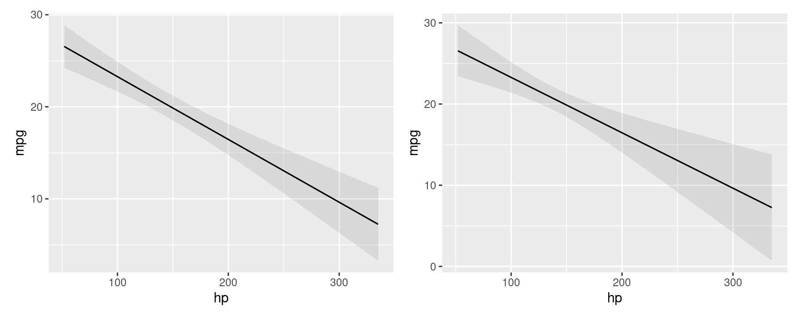
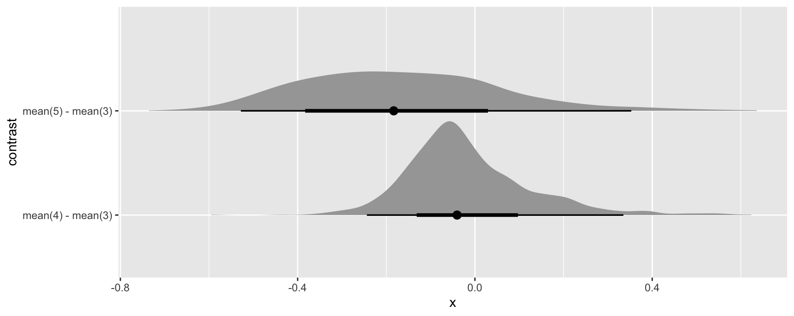
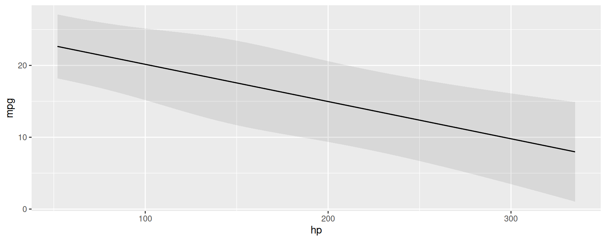

library(marginaleffects)
library(patchwork)
mod <- lm(mpg ~ hp, data = mtcars)
p <- predictions(mod)
head(p, 2)
#>
#> Estimate Std. Error z Pr(>|z|) S 2.5 % 97.5 %
#> 22.6 0.777 29.1 <0.001 614.7 21.1 24.1
#> 22.6 0.777 29.1 <0.001 614.7 21.1 24.1
#>
#> Columns: rowid, estimate, std.error, statistic, p.value, s.value, conf.low, conf.high, mpg, hp
#> Type: response
p <- predictions(mod, vcov = "HC3")
head(p, 2)
#>
#> Estimate Std. Error z Pr(>|z|) S 2.5 % 97.5 %
#> 22.6 0.863 26.2 <0.001 499.5 20.9 24.3
#> 22.6 0.863 26.2 <0.001 499.5 20.9 24.3
#>
#> Columns: rowid, estimate, std.error, statistic, p.value, s.value, conf.low, conf.high, mpg, hp
#> Type: responseStandard Errors
Delta Method
All the standard errors generated by the slopes(), comparisons(), and hypotheses() functions of this package package are estimated using the delta method. Mathematical treatments of this method can be found in most statistics textbooks and on Wikipedia. Roughly speaking, the delta method allows us to approximate the distribution of a smooth function of an asymptotically normal estimator.
Concretely, this allows us to generate standard errors around functions of a model’s coefficient estimates. Predictions, contrasts, slopes, and other quantities estimated by marginaleffects are all functions of a model’s coefficient estimates, so we can use the delta method to estimate standard errors around all of those quantities (with some assumptions). Since there are a lot of mathematical treatments available elsewhere, this vignette focuses on the implementation in marginaleffects.
Consider the case of the predictions() function. When a user calls this function, they obtain a vector of adjusted predictions. To estimate standard errors around this vector:
- Take the numerical derivative of the predictions vector with respect to the first coefficient in the model:
- Compute predictions with the original model: \(f(\beta)\)
- Increment the first (and only the first) coefficient held inside the model object by a small amount, and compute means again: \(f(\beta+\varepsilon)\)
- Calculate: \(\frac{f(\beta+\varepsilon) - f(\beta)}{\varepsilon}\)
- Repeat step 1 for every coefficient in the model to construct a \(J\) matrix.
- Extract the variance-covariance matrix of the coefficient estimates (usually with
vcov(model)): \(V\) - Standard errors are the square root of the diagonal of \(JVJ'\)
Scroll down this page to the Numerical Derivatives section to see a detailed explanation, along with code for manual computation.
Standard errors and intervals for slopes() and comparisons()
All standard errors for the slopes() and comparisons() functions are computed using the delta method, as described above. The confidence intervals are calculated as estimate ± qnorm((1 - conf_level) / 2) standard errors (e.g., for 95% confidence intervals, estimate ± 1.96 standard errors) and assume that the (transformed) estimates are normally distributed.
Standard errors and intervals for predictions()
The predictions() function can compute the confidence intervals in two main ways. For certain models, the type argument accept this value: type="invlink(link)". In those cases, predictions() will first compute estimates on the link scale, and then back transform them using the inverse link function supplied by insight::link_inverse(model) function. In all other cases, standard errors are computed using the delta method directly on the specific scale, and then build symmetric intervals around the estimates.
Robust standard errors
All the functions in the marginaleffects package can compute robust standard errors on the fly for any model type supported by the sandwich package. The vcov argument supports string shortcuts like "HC3", a one-sided formula to request clustered standard errors, variance-covariance matrices, or functions which return such matrices. Here are a few examples.
Adjusted predictions with classical or heteroskedasticity-robust standard errors:
Marginal effects with cluster-robust standard errors:
avg_slopes(mod, vcov = ~cyl)
#>
#> Term Contrast Estimate Std. Error z Pr(>|z|) S 2.5 % 97.5 %
#> hp mean(dY/dX) -0.0682 0.0187 -3.65 <0.001 11.9 -0.105 -0.0316
#>
#> Columns: term, contrast, estimate, std.error, statistic, p.value, s.value, conf.low, conf.high, predicted_lo, predicted_hi, predicted
#> Type: responseComparing adjusted predictions with classical and robust standard errors:
p1 <- plot_predictions(mod, condition = "hp")
p2 <- plot_predictions(mod, condition = "hp", vcov = "HC3")
p1 + p2
Simulation-based inference
marginaleffects offers an experimental inferences function to conduct simulation-based inference following the strategy proposed by Krinsky & Robb (1986):
- Draw
itersets of simulated coefficients from a multivariate normal distribution with mean equal to the original model’s estimated coefficients and variance equal to the model’s variance-covariance matrix (classical, “HC3”, or other). - Use the
itersets of coefficients to computeitersets of estimands: predictions, comparisons, or slopes. - Take quantiles of the resulting distribution of estimands to obtain a confidence interval and the standard deviation of simulated estimates to estimate the standard error.
Here are a few examples:
library(marginaleffects)
library(ggplot2)
library(ggdist)
mod <- glm(vs ~ hp * wt + factor(gear), data = mtcars, family = binomial)
mod |> predictions() |> inferences(method = "simulation")
#>
#> Estimate 2.5 % 97.5 % hp wt gear
#> 7.84e-01 2.79e-01 0.974 110 2.62 4
#> 7.84e-01 3.53e-01 0.962 110 2.88 4
#> 8.98e-01 4.81e-01 0.990 93 2.32 4
#> 8.74e-01 1.52e-01 0.995 110 3.21 3
#> 1.31e-02 6.45e-05 0.761 175 3.44 3
#> --- 22 rows omitted. See ?avg_predictions and ?print.marginaleffects ---
#> 3.83e-01 1.76e-02 0.954 113 1.51 5
#> 1.21e-06 1.79e-12 0.295 264 3.17 5
#> 6.89e-03 2.63e-05 0.566 175 2.77 5
#> 8.07e-11 2.22e-16 0.721 335 3.57 5
#> 7.95e-01 3.55e-01 0.967 109 2.78 4
#> Columns: rowid, estimate, vs, hp, wt, gear, conf.low, conf.high
#> Type: invlink(link)
mod |> avg_slopes(vcov = ~gear) |> inferences(method = "simulation")
#>
#> Term Contrast Estimate 2.5 % 97.5 %
#> gear mean(4) - mean(3) -3.92e-02 -0.0923 0.14714
#> gear mean(5) - mean(3) -1.93e-01 -0.4879 0.33099
#> hp mean(dY/dX) -5.02e-03 -0.0114 0.00372
#> wt mean(dY/dX) -3.98e-05 -0.4901 0.65704
#>
#> Columns: term, contrast, estimate, predicted_lo, predicted_hi, predicted, conf.low, conf.high
#> Type: responseSince simulation based inference generates iter estimates of the quantities of interest, we can treat them similarly to draws from the posterior distribution in bayesian models. For example, we can extract draws using the posterior_draws() function, and plot their distributions using packages likeggplot2 and ggdist:
mod |>
avg_comparisons(variables = "gear") |>
inferences(method = "simulation") |>
posterior_draws("rvar") |>
ggplot(aes(y = contrast, xdist = rvar)) +
stat_slabinterval()
Bootstrap
It is easy to use the bootstrap as an alternative strategy to compute standard errors and confidence intervals. Several R packages can help us achieve this, including the long-established boot package:
library(boot)
set.seed(123)
bootfun <- function(data, indices, ...) {
d <- data[indices, ]
mod <- lm(mpg ~ am + hp + factor(cyl), data = d)
cmp <- comparisons(mod, newdata = d, vcov = FALSE, variables = "am")
tidy(cmp)$estimate
}
b <- boot(data = mtcars, statistic = bootfun, R = 1000)
b
#>
#> ORDINARY NONPARAMETRIC BOOTSTRAP
#>
#>
#> Call:
#> boot(data = mtcars, statistic = bootfun, R = 1000)
#>
#>
#> Bootstrap Statistics :
#> original bias std. error
#> t1* 4.157856 0.01543426 1.003461
#> t2* 4.157856 0.01543426 1.003461
#> t3* 4.157856 0.01543426 1.003461
#> t4* 4.157856 0.01543426 1.003461
#> t5* 4.157856 0.01543426 1.003461
#> t6* 4.157856 0.01543426 1.003461
#> t7* 4.157856 0.01543426 1.003461
#> t8* 4.157856 0.01543426 1.003461
#> t9* 4.157856 0.01543426 1.003461
#> t10* 4.157856 0.01543426 1.003461
#> t11* 4.157856 0.01543426 1.003461
#> t12* 4.157856 0.01543426 1.003461
#> t13* 4.157856 0.01543426 1.003461
#> t14* 4.157856 0.01543426 1.003461
#> t15* 4.157856 0.01543426 1.003461
#> t16* 4.157856 0.01543426 1.003461
#> t17* 4.157856 0.01543426 1.003461
#> t18* 4.157856 0.01543426 1.003461
#> t19* 4.157856 0.01543426 1.003461
#> t20* 4.157856 0.01543426 1.003461
#> t21* 4.157856 0.01543426 1.003461
#> t22* 4.157856 0.01543426 1.003461
#> t23* 4.157856 0.01543426 1.003461
#> t24* 4.157856 0.01543426 1.003461
#> t25* 4.157856 0.01543426 1.003461
#> t26* 4.157856 0.01543426 1.003461
#> t27* 4.157856 0.01543426 1.003461
#> t28* 4.157856 0.01543426 1.003461
#> t29* 4.157856 0.01543426 1.003461
#> t30* 4.157856 0.01543426 1.003461
#> t31* 4.157856 0.01543426 1.003461
#> t32* 4.157856 0.01543426 1.003461
boot.ci(b, type = "perc")
#> BOOTSTRAP CONFIDENCE INTERVAL CALCULATIONS
#> Based on 1000 bootstrap replicates
#>
#> CALL :
#> boot.ci(boot.out = b, type = "perc")
#>
#> Intervals :
#> Level Percentile
#> 95% ( 2.240, 6.277 )
#> Calculations and Intervals on Original ScaleNote that, in the code above, we set vcov=FALSE to avoid computation of delta method standard errors and speed things up.
Compare to the delta method standard errors:
mod <- lm(mpg ~ am + hp + factor(cyl), data = mtcars)
avg_comparisons(mod, variables = "am")
#>
#> Term Contrast Estimate Std. Error z Pr(>|z|) S 2.5 % 97.5 %
#> am mean(1) - mean(0) 4.16 1.26 3.31 <0.001 10.1 1.7 6.62
#>
#> Columns: term, contrast, estimate, std.error, statistic, p.value, s.value, conf.low, conf.high, predicted_lo, predicted_hi, predicted
#> Type: responseMixed effects models: Satterthwaite and Kenward-Roger corrections
For linear mixed effects models we can apply the Satterthwaite and Kenward-Roger corrections in the same way as above:
library(marginaleffects)
library(patchwork)
library(lme4)
dat <- mtcars
dat$cyl <- factor(dat$cyl)
dat$am <- as.logical(dat$am)
mod <- lmer(mpg ~ hp + am + (1 | cyl), data = dat)Marginal effects at the mean with classical standard errors and z-statistic:
slopes(mod, newdata = "mean")
#>
#> Term Contrast Estimate Std. Error z Pr(>|z|) S 2.5 % 97.5 %
#> am TRUE - FALSE 4.6661 1.1343 4.11 <0.001 14.6 2.4430 6.8892
#> hp dY/dX -0.0518 0.0115 -4.52 <0.001 17.3 -0.0743 -0.0294
#>
#> Columns: rowid, term, contrast, estimate, std.error, statistic, p.value, s.value, conf.low, conf.high, predicted_lo, predicted_hi, predicted, hp, am, cyl, mpg
#> Type: responseMarginal effects at the mean with Kenward-Roger adjusted variance-covariance and degrees of freedom:
slopes(mod,
newdata = "mean",
vcov = "kenward-roger")
#>
#> Term Contrast Estimate Std. Error t Pr(>|t|) S 2.5 % 97.5 % Df
#> am TRUE - FALSE 4.6661 1.2824 3.64 0.0874 3.5 -1.980 11.3121 1.68
#> hp dY/dX -0.0518 0.0152 -3.41 0.0964 3.4 -0.131 0.0269 1.68
#>
#> Columns: rowid, term, contrast, estimate, std.error, statistic, p.value, s.value, conf.low, conf.high, predicted_lo, predicted_hi, predicted, hp, am, cyl, mpg, df
#> Type: responseWe can use the same option in any of the package’s core functions, including:
plot_predictions(mod, condition = "hp", vcov = "satterthwaite")
Numerical derivatives: Sensitivity to step size
marginaleffects uses numerical derivatives in two contexts:
- Estimate the partial derivatives reported by
slopes()function.- Centered finite difference
-
\(\frac{f(x + \varepsilon_1 / 2) - f(x - \varepsilon_1 / 2)}{\varepsilon_1}\), where we take the derivative with respect to a predictor of interest, and \(f\) is the
predict()function.
- Estimate standard errors using the delta method.
- Forward finite difference
-
\(\frac{g(\hat{\beta}) - g(\hat{\beta} + \varepsilon_2)}{\varepsilon_2}\), where we take the derivative with respect to a model’s coefficients, and \(g\) is a
marginaleffectsfunction which returns some quantity of interest (e.g., slope, contrasts, predictions, etc.)
Note that the step sizes used in those two contexts can differ. If the variables and coefficients have very different scales, it may make sense to use different values for \(\varepsilon_1\) and \(\varepsilon_2\).
By default, \(\varepsilon_1\) is set to 1e-4 times the range of the variable with respect to which we are taking the derivative. By default, \(\varepsilon_2\) is set to the maximum value of 1e-8, or 1e-4 times the smallest absolute coefficient estimate. (These choices are arbitrary, but I have found that in practice, smaller values can produce unstable results.)
\(\varepsilon_1\) can be controlled by the eps argument of the slopes() function. \(\varepsilon_2\) can be controlled by setting a global option which tells marginaleffects to compute the jacobian using the numDeriv package instead of its own internal functions. This allows more control over the step size, and also gives access to other differentiation methods, such as Richardson’s. To use numDeriv, we define a list of arguments which will be pushed forward to numDeriv::jacobian:
avg_slopes(mod, variables = "bill_length_mm")
#>
#> Term Contrast Estimate Std. Error z Pr(>|z|) S 2.5 % 97.5 %
#> bill_length_mm mean(dY/dX) 0.0279 0.00595 4.69 <0.001 18.4 0.0162 0.0395
#>
#> Columns: term, contrast, estimate, std.error, statistic, p.value, s.value, conf.low, conf.high, predicted_lo, predicted_hi, predicted
#> Type: response
options(marginaleffects_numDeriv = list(method = "Richardson"))
avg_slopes(mod, variables = "bill_length_mm")
#>
#> Term Contrast Estimate Std. Error z Pr(>|z|) S 2.5 % 97.5 %
#> bill_length_mm mean(dY/dX) 0.0279 0.00595 4.69 <0.001 18.4 0.0162 0.0395
#>
#> Columns: term, contrast, estimate, std.error, statistic, p.value, s.value, conf.low, conf.high, predicted_lo, predicted_hi, predicted
#> Type: response
options(marginaleffects_numDeriv = list(method = "simple", method.args = list(eps = 1e-3)))
avg_slopes(mod, variables = "bill_length_mm")
#>
#> Term Contrast Estimate Std. Error z Pr(>|z|) S 2.5 % 97.5 %
#> bill_length_mm mean(dY/dX) 0.0279 0.568 0.049 0.961 0.1 -1.09 1.14
#>
#> Columns: term, contrast, estimate, std.error, statistic, p.value, s.value, conf.low, conf.high, predicted_lo, predicted_hi, predicted
#> Type: response
options(marginaleffects_numDeriv = list(method = "simple", method.args = list(eps = 1e-5)))
avg_slopes(mod, variables = "bill_length_mm")
#>
#> Term Contrast Estimate Std. Error z Pr(>|z|) S 2.5 % 97.5 %
#> bill_length_mm mean(dY/dX) 0.0279 0.00601 4.64 <0.001 18.1 0.0161 0.0396
#>
#> Columns: term, contrast, estimate, std.error, statistic, p.value, s.value, conf.low, conf.high, predicted_lo, predicted_hi, predicted
#> Type: response
options(marginaleffects_numDeriv = list(method = "simple", method.args = list(eps = 1e-7)))
avg_slopes(mod, variables = "bill_length_mm")
#>
#> Term Contrast Estimate Std. Error z Pr(>|z|) S 2.5 % 97.5 %
#> bill_length_mm mean(dY/dX) 0.0279 0.00595 4.68 <0.001 18.4 0.0162 0.0395
#>
#> Columns: term, contrast, estimate, std.error, statistic, p.value, s.value, conf.low, conf.high, predicted_lo, predicted_hi, predicted
#> Type: responseNotice that the standard errors can vary considerably when using different step sizes. It is good practice for analysts to consider the sensitivity of their results to this setting.
Now, we illustrate the full process of standard error computation, using raw R code. First, we choose two step sizes:
eps1 <- 1e-5 # slope
eps2 <- 1e-7 # delta method
s <- slopes(mod, newdata = head(dat, 3), variables = "bill_length_mm", eps = eps1)
print(s[, 1:5], digits = 6)
#>
#> Term Estimate Std. Error z
#> bill_length_mm 0.0179765 0.00872988 2.05919
#> bill_length_mm 0.0359630 0.01254767 2.86611
#> bill_length_mm 0.0849071 0.02128459 3.98913
#>
#> Columns: rowid, term, estimate, std.error, statisticWe can get the same estimates manually with these steps:
linkinv <- mod$family$linkinv
## increment the variable of interest by h
dat_hi <- transform(dat, bill_length_mm = bill_length_mm + eps1)
## model matrices: first 3 rows
mm_lo <- insight::get_modelmatrix(mod, data = dat)[1:3,]
mm_hi <- insight::get_modelmatrix(mod, data = dat_hi)[1:3,]
## predictions
p_lo <- linkinv(mm_lo %*% coef(mod))
p_hi <- linkinv(mm_hi %*% coef(mod))
## slopes
(p_hi - p_lo) / eps1
#> [,1]
#> 1 0.01797653
#> 2 0.03596304
#> 3 0.08490712To get standard errors, we build a jacobian matrix where each column holds derivatives of the vector valued slope function, with respect to each of the coefficients. Using the same example:
This gives us the first column of \(J\), which we can recover in full from the marginaleffects object attribute:
J <- attr(s, "jacobian")
J
#> (Intercept) bill_length_mm flipper_length_mm speciesChinstrap speciesGentoo bill_length_mm:flipper_length_mm
#> [1,] 0.01600803 0.6777495 2.897238 0 0 122.6914
#> [2,] 0.02770006 1.1957935 5.153072 0 0 222.4989
#> [3,] 0.02275957 1.1491919 4.440004 0 0 224.0833To build the full matrix, we would simply iterate through the coefficients, incrementing them one after the other. Finally, we get standard errors via:
Which corresponds to our original standard errors:
print(s[, 1:5], digits = 7)
#>
#> Term Estimate Std. Error z
#> bill_length_mm 0.01797650 0.008729884 2.059192
#> bill_length_mm 0.03596299 0.012547666 2.866110
#> bill_length_mm 0.08490708 0.021284589 3.989134
#>
#> Columns: rowid, term, estimate, std.error, statisticReverting to default settings:
options(marginaleffects_numDeriv = NULL)Note that our default results for this model are very similar – but not exactly identical – to those generated by the margins. As should be expected, the results in margins are also very sensitive to the value of eps for this model:
library(margins)
margins(mod, variables = "bill_length_mm", data = head(dat, 3), unit_ses = TRUE)$SE_dydx_bill_length_mm
margins(mod, variables = "bill_length_mm", data = head(dat, 3), eps = 1e-4, unit_ses = TRUE)$SE_dydx_bill_length_mm
margins(mod, variables = "bill_length_mm", data = head(dat, 3), eps = 1e-5, unit_ses = TRUE)$SE_dydx_bill_length_mmBayesian estimates and credible intervals
See the brms vignette for a discussion of bayesian estimates and credible intervals.